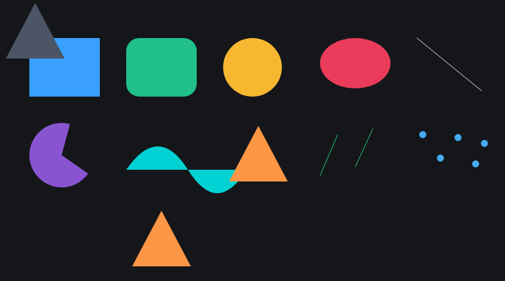
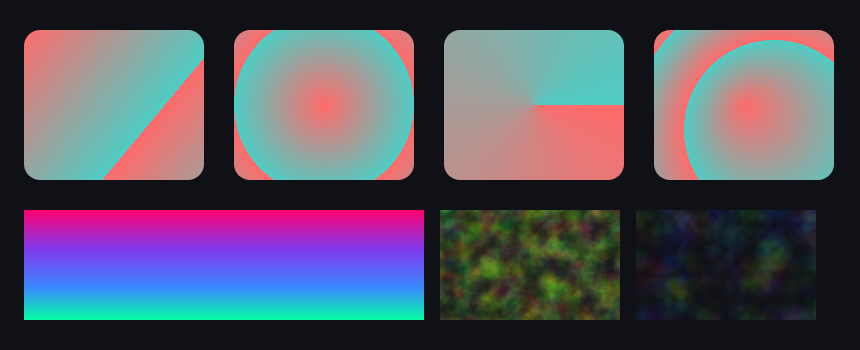
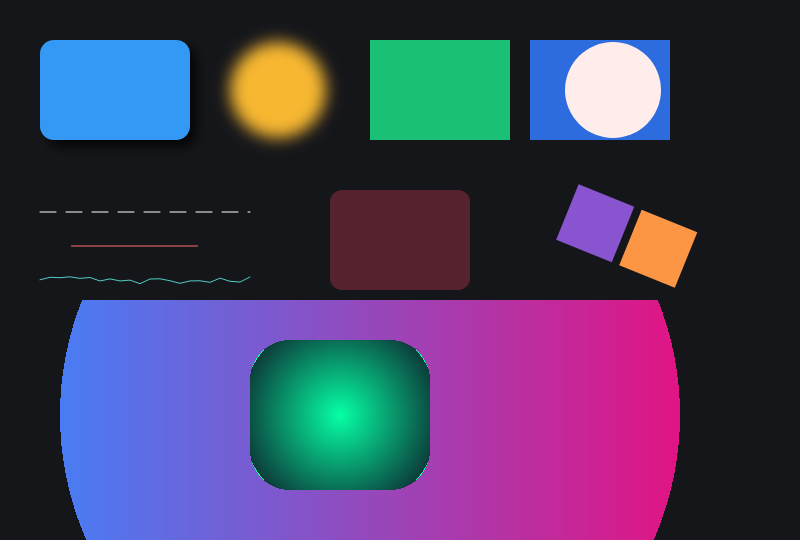
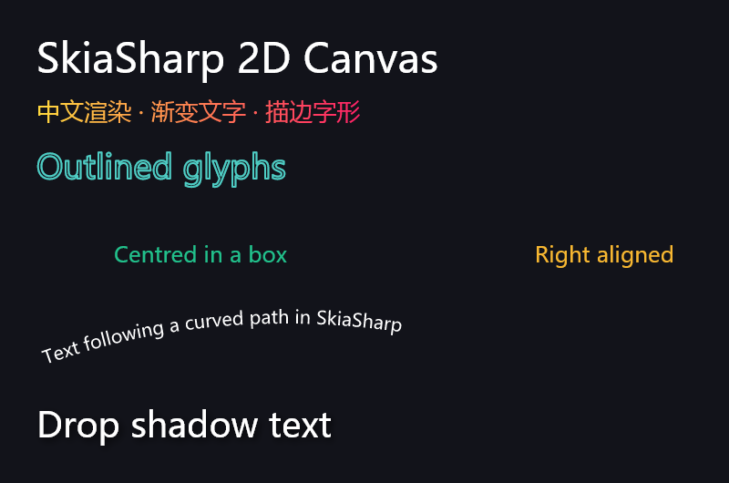
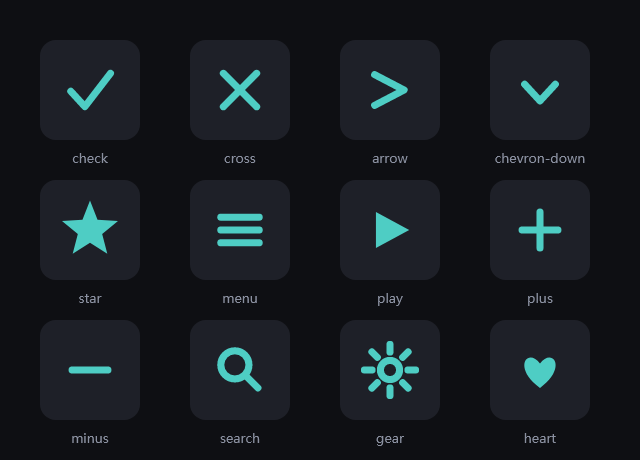
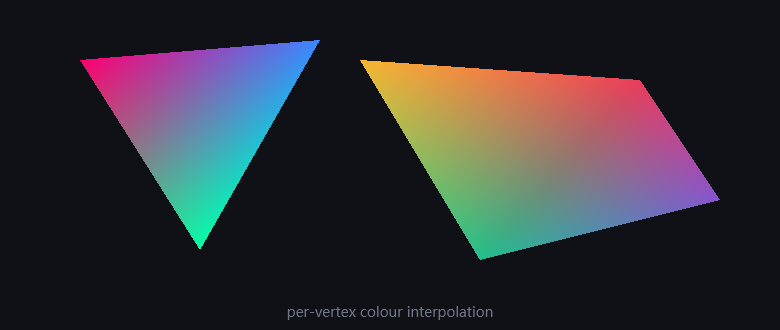
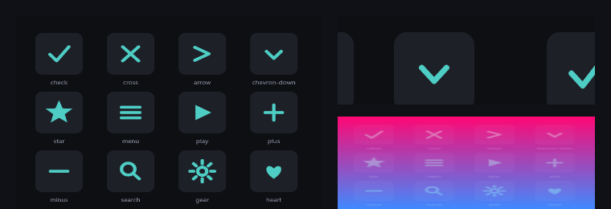

图元总览
shapes
矩形 / 圆角矩形 / 圆 / 椭圆 / 线段 / 扇形弧 / SVG 路径曲线 / 实心多边形 / 折线 / 散点。
第二行末尾两个三角形演示 x/y 会整体平移点列——同一份 points 放到不同位置。

填充与着色器
gradients
线性 / 径向 / 扫描 / 双点锥形四种渐变，四段显式 stop 的彩虹渐变，
以及分形噪波与湍流两种 PerlinNoise 着色器。

效果合成
effects
投影（CreateDropShadow）、掩膜模糊、multiply 与 screen 混合、
虚线 / trim 局部线段 / discrete 抖动虚线三种路径效果、30% 透明度、
绕枢轴旋转的组、圆形裁剪与圆角裁剪各一。
底部两块遮罩里的渐变用 space:"canvas" 铺满整个裁剪区。

文字排版
text大标题、中文与渐变字、描边字形（先描边后填充两遍）、盒子内居中与右对齐、 沿曲线路径排布的文字、带投影的文字。

内置矢量图标
icons
控件层与画布层共用同一套 IconLibrary，全部用 SkiaSharp 基本图元手绘，无外部资源。

逐顶点渐变网格
mesh
DrawVertices 的逐顶点着色：三角形三色插值，四边形用 indices 指定两个三角形。

图片合成
composite
左：图片缩放绘制。右上：图片作为 repeat 平铺着色器填满矩形。
右下：同一张图以 screen 混合叠在渐变上。

动作一览
api| 动作 | 说明 |
|---|---|
uisourcegen.draw | 单张画布 → 图片（png/jpg/webp/bmp/gif）+ canvas.json 回写，可重放 |
uisourcegen.draw_batch | 多张画布，各自一个子目录 |
uisourcegen.pdf | 多页 PDF（SKDocument.CreatePdf，矢量） |
uisourcegen.svg | SVG 路径数据按包围盒自动定尺寸栅格化 |
uisourcegen.measure | 文本宽度 / 上下降部 / 行高；路径长度与包围盒 |
uisourcegen.fonts | 系统字体族枚举 + 默认字体路径 |
uisourcegen.canvas_spec | 画布语法骨架、图元 / paint / 混合 / 效果枚举 |
uisourcegen.canvas_examples | 一份可直接投喂 draw 的示例 |
这轮修掉的 7 个真实缺陷
debug log- 1
line的to用了绝对坐标 一条 210px 的短线画成横穿整个画布的长斜线 - 2
polygon填充被静默丢弃SKCanvas.DrawPoints只能描边；实心三角形被画成三条边，改走 SKPath 两遍 - 3SVG path 不吃
x,yParseSvgPathData出来的路径停在原点，补Offset - 4顶点网格不吃
x,y同上，vertices也无法整体平移 - 5描边文字完全不可见
描边色藏在 fill paint 的
stroke_color里，而绘制用的是 fill 的透明color；解析期拆成独立 stroke，文字改先描边后填充 - 6
SKAutoCanvasRestore(cv, false)是空操作 构造传false就不 Save，Dispose 里永远不恢复——一个自称"自动恢复"的结构什么都没做 - 7
SKTileMode不存在 SkiaSharp 2.88.9 里叫SKShaderTileMode，只在真编译时现形